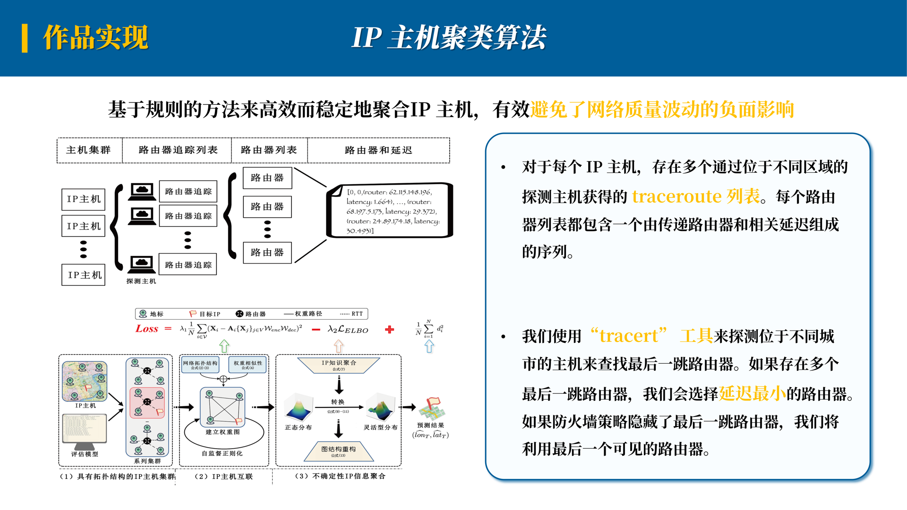
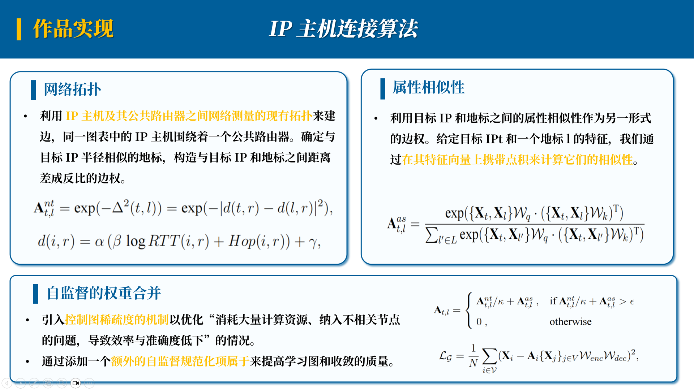
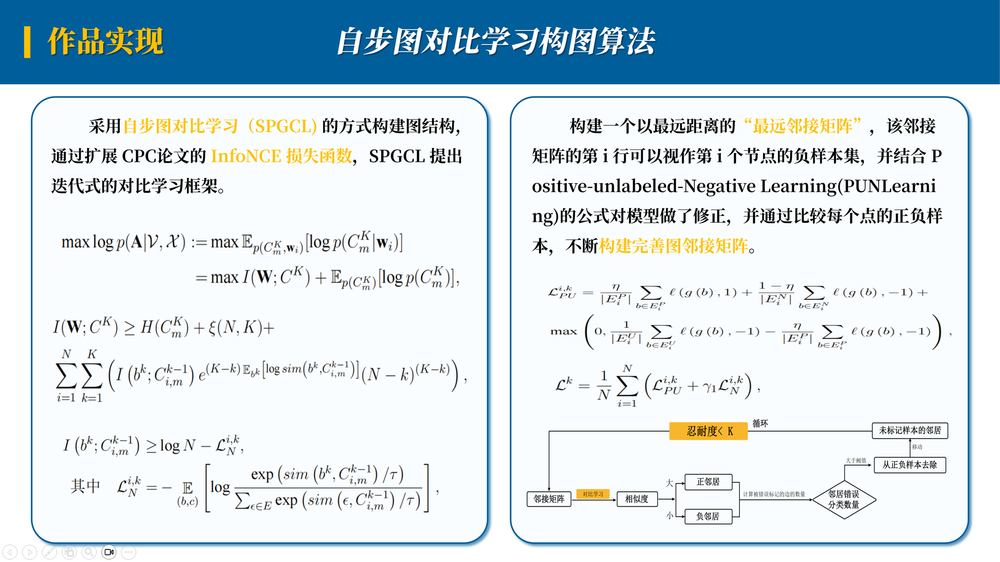
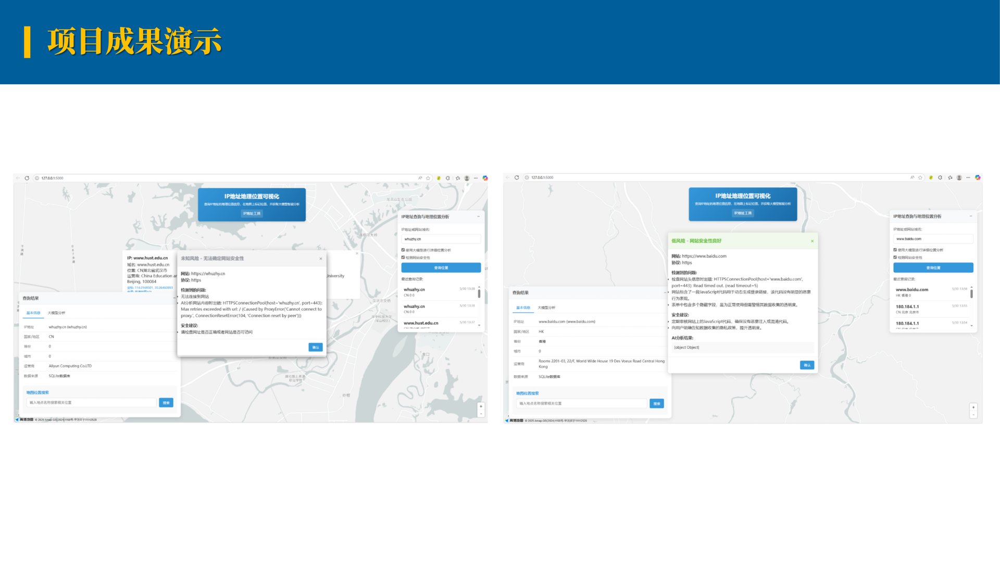

GeoNet 一种基于图神经网络（GNN）的细粒度IP地理定位框架，为街道级的IP地理定位提供了全新的解决方案。通过将IP主机和邻域关系嵌 入图结构中，我们能够推断网络空间拓扑，进而实现高质量的IP地理位置预测。为了 有效解决数据传递的不完整性和缺失问题，我们提出了一种自步图对比学习算法，通过 互信息分析动态挖掘IP节点之间的关联，并利用GCNmf模型处理缺失数据，显著提高 了定位精度。 此外，GeoNet通过对网络环境中可能的扰动进行建模，减少网络拥堵和抖动引发的不确定性，从而提升了定位结果的稳定性 和可靠性。系统通过集成高德地图API实现定位结果的可视化，并结合LangChain和ChatGLM 技术，实现了对IP地址链接的自动安全检测。
IP 主机的拓扑聚类：通过路由器信息实现高效稳定的IP主机聚类，避免网络测量噪声影响，为高精度地理定位奠定基础。
IP主机的连接：针对街道级 IP 地理定位问题，建立一个有效的图形结构来连接独立的IP 主机，重点聚焦设计图的边权算法。
具有不确定属性的IP属性聚合：为了克服不确定的网络测量，将图形神经网络应用到街道级IP地理定位任务中，提出了一个不确定性感知的图神经网络。
IP主机聚类算法：基于规则的方法来高效而稳定地聚合IP主机，有效避免了网络质量波动的负面影响
IP主机聚类算法：针对街道级IP主机地理定位的目标，建立一个有效的图形结构来连接独立的IP主机。
自步图对比学习构图算法：充分考虑到一些隐藏的特征之间的关系，完善了IP主机连接算法的不足。
大语言模型实现安全性检测：设若对某个链接指向的网页抱有怀疑，则可使用大语言模型(LLM)对齐安全性进行检测
结合路由器信息，从而有效避image.png免了网络质量波动的负面影响。
从拓扑和语义的角度建立了IP主机之间的邻域关系，形成加权图，加强了数据的准确度。
关注了复杂网络环境中普遍存在的网络拥塞和抖动所带来的不确定性和干扰性数据。
结合高德地图API和国产的大语言模型(LLM)，对截取IP进行经纬度定位和数据推理和对截取链接进行安全检测。
GeoNet的应用场景广泛，主要包括以下几个方面：
 项目代码
项目代码